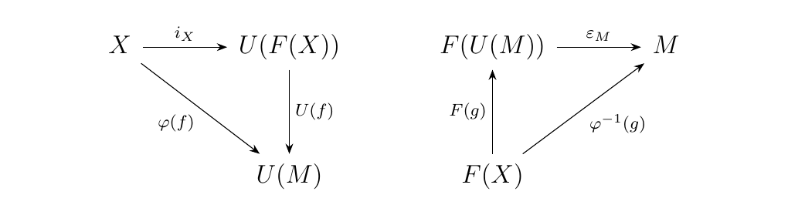
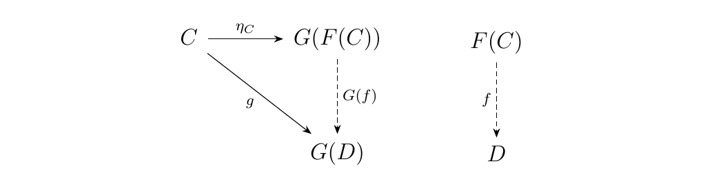
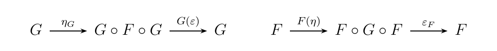
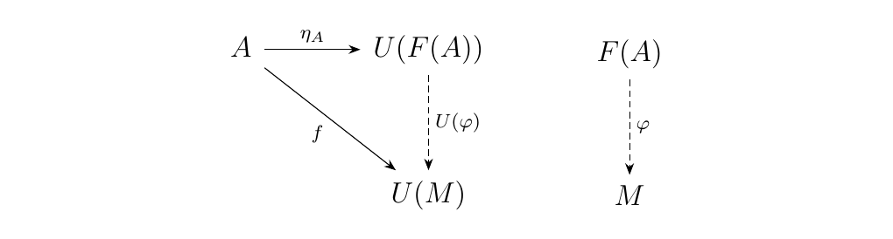

4.1. Introduction to Adjunctions.
As promised, we now build upon the work we did with universal morphisms to define the concept of an adjunction. Adjunctions are special cases of universal morphisms that occur between two functors \(F\) and \(G\) which assemble between two categories \(\cc\) and \(\dd\) as below. \begin{center} \adjunction{\cc}{F}{\dd}{G} \end{center}Studying adjunctions allows us to give an answer to many questions that appear in categories. For example, adjunctions can explain why, for instance, given two sets \(X\), \(Y\), we have the isomorphism
where \(F: **Set** \to **Grp**\) is the free group functor and \(*\) denotes the \hyperref[example:free_product]{\textcolor{blue}{free product}}. They can also explain why this property, and other similar properties, hold for similar free functors.
We begin with an example of an adjunction.
Recall that for a fixed unital ring \(R\) in \(**Ring**\), we may form the functor
which sends a group \(G\) to its \hyperref[example:group_ring_functor]{\textcolor{blue}{group ring}} \(R[G]\). Recall that
Recall also that we can form the functor
which sends an \(R\)-algebra \(A\) to its group of units \(A^{\times}\). These two functors are related in the following way. Consider a group \(G\) and its group ring \(R[G]\). In general, the units of \(R[G]\) are nontrivial. One thing we do know is that elements of the form \(1_R g\), with \(g \in G\), are units of \(R[G]\). (The multiplicative inverse of such an element is \(1_R g^{-1}\).) This allows us to construct a group homomorphism
What is interesting about this is the following fact: \((G, i: G \to (R[G])^{\times})\) is universal from \hyperref[definition:universal_morphism_from_D_to_F]{\textcolor{blue}{\(G\) to \((-)^{\times}\)}}. That is, if \(K\) is a ring, and we have a mapping \(\phi: G \to K^{\times}\), then there exists a unique ring homomorphism \(h: R[G] \to K\) such that the diagram below commutes.
The reason why this works is as follows: \(\phi\) tells us to where to send elements of \(G\). Since a map on \(R[G]\) can be defined by (1) defining where elements of \(G\) go and (2) extending linearly, \(\phi\) induces the existence of \(h\).
By Proposition \ref{proposition:universality_bijection}, we then have the following result: If \(K\) is an \(R\)-algebra, then for each group \(G\) there is a natural bijection
Specifically, the bijection is natural in \(G\).
But wait---There's more! For every ring \(K\), there is a natural ring homomorphism
where \(z(a_k) = 1_k\), the identity of \(K\), if \(a_k \ne 0\), and \(z(a_k) = 0\) if \(a_k = 0\). The reason why we care about this is because \((K, R[(K)^{\times}] \to K)\) is universal from \hyperref[definition:universal_morphism_from_F_to_D]{\textcolor{blue}{\(R[-]\) to \((K)^{\times}\)}}. That is, if \(G\) is a group and we have a mapping \(\psi: R[G] \to K\), then there exists a unique \(j: G \to (K)^{\times}\) such that the following diagram commutes.
We obtain \(j\) as follows: Note that \(\phi(1_R g) \in K^{\times}\), since ring homomorphisms send units to units. Hence, the composite
where \(i\) is defined earlier, yields \(j\). Moreover, the diagram commutes in this way. By Exercise \ref{exercise:universality_bijection}, if \(K\) is a ring, then for every group \(G\) we have the following natural bijection
Specifically, the bijection is natural in \(K\). However, we just saw this isomorphism before! This demonstrates our first example of an adjunction.
Let \(\cc, \dd\) be categories. Consider a pair of functors
 We say that \(F, G\) form an adjunction and that
\(F\) is left adjoint to \(G\) (and so \(G\) is right adjoint to \(F\))
if, for all \(C \in \cc\), \(D \in \dd\), there is a natural bijection
We say that \(F, G\) form an adjunction and that
\(F\) is left adjoint to \(G\) (and so \(G\) is right adjoint to \(F\))
if, for all \(C \in \cc\), \(D \in \dd\), there is a natural bijection
This definition is somewhat strange, so we comment a few remarks.
-
To define an adjunction between two functors, it suffices to specify which functor is the left adjoint, or which functor is the right adjoint (since one specification determines the other). Thus, the sentence "\(F\) and \(G\) form an adjunction" alone does not make sense; namely, it is missing information of which functor is the left or the right adjoint.
-
In an adjunction, we are always going to have some kind of bijection as above. But there are two different ways we could decide to write it:
This can potentially confuse us on which functor is the left adjoint, and which one is the right. However, one thing that does not change in the above expressions is the position of \(F(C)\) and \(G(D)\) in their hom-sets. In their hom-sets, the symbol \(F(C)\) is always in the left position, while \(G(D)\) is in the right. Hence we can determine if \(F\) or \(G\) is left or right based on glancing at the bijection. Conversely, knowing the left and rightedness of our functors tells us how to write down the bijection.
We now observe that this definition is equivalent to the existence of universal morphisms; this is something we already saw in our introductory example.
Let \(\cc, \dd\) be categories and consider a pair of functors
. The following are equivalent.
-
[(i.)] The functors \(F\), \(G\) form an adjunction where \(F\) is left adjoint to \(G\) (and so \(G\) is right adjoint to \(G\)).
-
[(ii.)] There exist natural transformations
such that \begin{itemize}
-
For each \(C \in \cc\), the morphism \(\eta_C: C \to G(F(C))\) is universal from \hyperref[definition:universal_morphism_from_D_to_F]{\textcolor{blue}{\(C\) to \(G\)}}
-
For each \(D \in \dd\), the morphism \(\epsilon_D: F(G(D)) \to D\) is universal from \hyperref[definition:universal_morphism_from_F_to_D]{\textcolor{blue}{\(F\) to \(D\)}}
\end{itemize}
Since \(F\) is left adjoint to \(G\), we have the natural bijection
This is natural in \(C\) and \(D\).
By Proposition \ref{proposition:universality_bijection}, the above bijection is natural in \(D\) if and only if there exists a morphism \(\eta_C: C \to G(F(C))\) which is universal from \(C\) to \(G\). However, the bijection holds for all \(C\). Therefore, we obtain a family of universal morphisms
Since this bijection is also natural in \(C\), we ultimately obtain a natural transformation \(\eta: I_{\cc} \to G \circ F\).
Using the same bijection from our adjunction, we can use Exercise \ref{exercise:universality_bijection} to conclude the existence of a family of morphisms \(\epsilon_D: F(G(D)) \to D\) which is universal from \(F\) to \(D\). We then use the fact that the bijection is natural to form the natural transformation \(\epsilon: F \circ G \to I_{\dd}\), as desired.
As we used if and only if propositions, our work proves both directions, which completes the proof.
Let \adjunction{\cc}{F}{\dd}{G} be an adjunction. We establish the following terminology.
-
The natural transformation \(\eta: I_{\cc} \to G \circ F\) is the unit of the adjunction.
-
The natural transformation \(\epsilon: F \circ G \to I_{\dd}\) is the counit of the adjunction.
We already saw this proposition in action in the introductory example. In that example, we found a pair functors \begin{center} \adjunction{Grp}{{R[-]}}{Ring}{(-)^{\times}} \end{center} that formed an adjunction with universal morphisms
for all groups \(G\) and rings \(K\). Hence \(i_G\) is the unit of the adjunction, while \(\epsilon_K\) is the counit. These units and counits are what allowed us to establish the bijection
natural in \(G\) and \(K\). Hence, the group ring functor \(R[-]\) is left adjoint to the group of units functor \((-)^{\times}\).
Using our previous work, we very quickly and (hopefully) painlessly established a connection between the natural bijection that appears in the definition of an adjunction and the unit and counit morphisms. However, we did not really describe what the bijection actually does on elements. The next proposition characterizes the bijection.
Let \(\cc\), \(\dd\) be categories, and suppose
form an adjunction with \(F\) left adjoint to \(G\). Let \(\eta\), \(\epsilon\) be the unit and counit.
For each \(C, D\), the natural bijection
is given by the function where for each \(f: F(C) \to D\) and \(g: C \to G(D)\),
The proof is left to the reader.
We have already encountered the pair of functors
where \(F\) is the free monoid functor and \(U\) is the forgetful monoid functor. We previously saw that given a set \(X\), there exists an inclusion morphism
and this morphism is universal from \universalDToF{\(X\) to \(U\)}. In addition, we know that the monoid homomorphism
and this morphism is from \universalFToD{\(F\) to \(M\)}. Therefore, we see that \(F\) and \(U\) are adjoint functors; specifically, \(F\) is left adjoint to \(G\) and \(G\) is right adjoint to \(F\), and we have the natural bijection
Moreover, we know exactly how this bijection works.
-
For \(f: F(X) \to M\), we send \(\phi(f)\) to \(U(f) \circ i_X\).
-
For \(g: X \to U(M)\), we send \(\phi^{-1}(g)\) to \(\epsilon_M \circ F(g)\).
This data assembles into the commutative diagrams as below.

Now we offer some sufficient conditions for establishing an adjunction.
Let \(G: \dd \to C\) be a functor. Suppose that for each \(C \in \cc\), there exists an object \(F_0(C) \in \dd\) and a universal morphism \(\eta_C: C \to G(F_0(C))\) from \(C\) to \(G\). Then there exists a functor \(F: \cc \to \dd\) which is left-adjoint to \(G\).
To have universality from \(C\) to \(G\), the diagram
 must commute. Hence we have a bijection
Now suppose \(h: C \to C'\). Then the dashed arrow
must exist by universality; we simply utilize the previous diagram. In other words, if \(h: C \to C'\), then there exists a morphism \(f: F_0(C) \to F_0(C')\). With that said, we can then define a functor where \(F: \cc \to \dd\) with \(F(C) = F_0(C)\) and \(F(h) = F_0(C) \to F_0(C')\). By construction, this functor is left adjoint to \(G\).
A similar proposition holds for the establishing a right adjoint.
Let \(F: \cc \to \dd\) be a functor. Suppose for each object \(D \in \dd\) there exists an object \(G_0(D) \in \cc\) and a universal morphism \(\epsilon_d: F(G_0(D)) \to D\) from \(F\) to \(D\).
Then there exists a functor \(G: \dd \to \cc\) which is right-adjoint to \(F\).
We now introduce a proposition which offers sufficient conditions for an adjunction, although it is not parallel to either of our previous propositions.
Let \(F: \cc \to \dd\) and \(G: \dd \to \cc\) be functors, and suppose we have the pair of natural transformations:
such that the following composites are the identity:
 Then there exists a bijective \(\phi\) such that \((F, G, \phi)\) form an adjunction between \(\cc\) and \(\dd\).
Let \(U: **R-Mod** \to **Ab**\) be the forgetful functor, which forgets the \(R\)-module structure on the underlying abelian group \(M\). Consider the functor \(F: **Ab** \to **R-Mod**\), where \(F(A) = R \otimes A\). We'll show that this is left-adjoint to \(U\) as follows.
To show this, we'll propose a morphism which we will show to be universal. If \(A\) is an abelian group, then we let \(\eta_A : A \to U(F(A))\) where \(\eta_A(a) = 1 \otimes a\).
Thus let \(M\) be an \(R\)-module, and suppose there exists a morphism \(f: A \to U(M)\). Then we can define a morphism \(\phi: F(A) \to M\) where
Our construction ensures that this is a well-defined \(R\)-module homomorphism. Hence we clearly have the equality \(U(\phi) \circ \eta_A = f\). Visually, this becomes

Since the construction of \(\phi\) depends directly on the existence of \(f\), we see that it is unique. Hence we see that \(\eta_A: A \to U(F(A))\) is universal from \(A\) to \(U\). Then by Theorem 4.1, we see that we have an adjunction, so that \(F\) is truly left adjoint to the forgetful functor \(U\).
The following proposition is one of the main reasons why adjoint functors are extremely useful.
Let \(F, F' : \cc \to \dd\) be two left adjoints of the functor \(G : \dd \to \cc\). Then \(F, F'\) are naturally isomorphic.
Let \((F, G, \phi)\) and \((F', G, \phi')\) be two adjunctions between \(\cc\) and \(\dd\). Then these adjoints give rise to the universal morphisms
for every \(C \in \cc\). Since these are both universal morphisms from \(C\) to \(G\), we know that they are isomorphic. Hence there exists a unique isomorphism \(\theta_C : F(C) \to F'(C)\) by universality such that \(G(\theta_C) \circ \eta_C = \eta_C'\) (think of a universal diagram).
Now let \(h: C \to C'\) be a morphism in \(\cc\). Then \(F'(h) \circ \theta_C = \theta_{C'} \circ F(h)\) so that the diagram
commutes. Hence we see that \(\theta: F \to F'\) is a natural isomorphic transformation between \(F\) and \(F'\), so that these two functors are naturally isomorphic. The other direction holds as well. That is, two right adjoints to one left adjoint are naturally isomorphic as well, and the proof is the same. We now have our last proposition for this section.
Let \(G: \dd \to \cc\) be a functor. Then \(G\) has a left-adjoint \(F: \cc \to \dd\) if and only if for each \(C \in \cc\), the functor \(\hom_{\cc}(C, G(-))\) is representable as a functor of \(D \in \dd\). Furthermore, if \(\phi: \hom_{\dd}(F_0(C), D) \cong \hom_{\cc}(C, G(D))\) is a representation of this functor, then \(F_0\) is the object function of \(F\).
Finally, we end this section by realizing that we can actually form composition of adjoints.
Let \(\cc, \dd\) and \(\ee\) be categories. Suppose we have two adjunctions as below.
Then the functors \(F'\circ F\), \(G \circ G'\) form an adjunction between \(\cc\) and \(\ee\). Further, if \((\eta, \epsilon)\) and \((\eta', \epsilon')\) are unit and counits of the adjunction from \((F, G)\) and \((F', G')\), then the unit and counit of the new adjunction is
\vspace{-0.7cm}
First, observe that the two given adjunctions give rise to
which are relations that are natural in objects \(C, D\) and \(E\). Observe that in the second relation, we can set \(D = F(C)\). This then translates to
Using the first relation, we know that \(\hom_{\dd}(F(C), G(E)) \cong \hom_{\cc}(C, G(G'(E)))\). Putting this together, we then have the bijection of homsets
which is natural in \(C\) and \(E\). Now, describing the unit and counit is a bit ugly, and not exactly necessary, since in the end we know what these adjunctions look like. The punchline here is that we can write our new unit and counit in terms of the original ones.
Observe that for any object \(C\) of \(\cc\), we have the universal morphism
Since \(F(C) \in \dd\), we can use \(\eta'\) that
Finally, note that \(G(\eta'_{F(C)}): G(F(C)) \to G(G'(F'(F(C))))\). However, we can precompose this with \(\eta_C\) to have that
On the other hand, for any object \(E\) of \(\ee\) that
We also have \(\epsilon_D : F(G(D)) \to D\) for any object \(D \in \dd\). Hence, we can set \(D = G'(E)\) for some object \(E\) of \(\ee\) to get
We can then get that \(F'(\epsilon_{G'(E)}) : F'(F(G(G'(E)))) \to F'(G'(E))\). Composing this with the original \(\epsilon'_D\), we get that
as desired. Now showing that these remain universal is not hard.
{\large Exercises \vspace{0.5cm}}
-
[1.] Give a proof of Proposition \ref{proposition:adjunction_isomorphism_behavior}.
-
[2.] Let \(U: **Ab** \to **Grp**\) be the forgetful functor, and suppose \(F: **Grp** \to **Ab**\) is the abelianization functor. That is, if \(G\) is a group and \(\phi: G \to G'\) is a group homomorphism then
where \([G,G]\) is the commutator subgroup.
Show that we have an adjunction \adjunction{Grp}{F}{Ab.}{U} Give a description of the unit and counits.